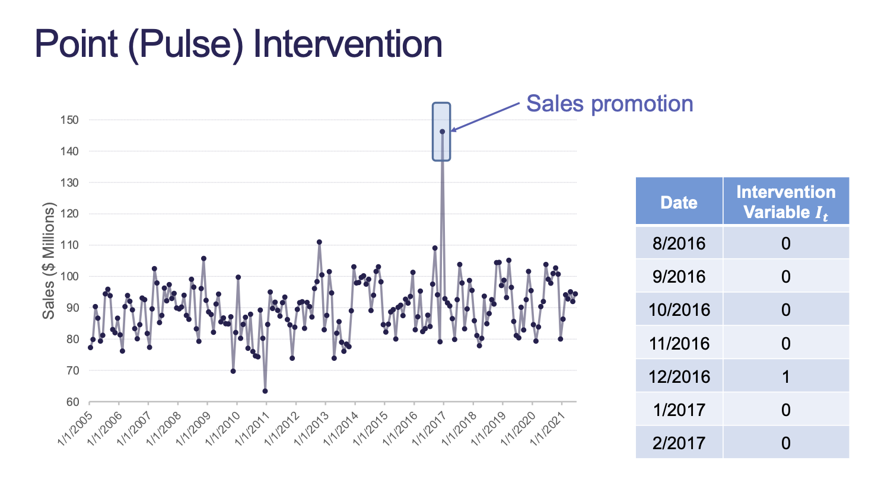

1 Regression with ARIMA Errors
External information can make better forecasts as well as potentially account for trend and seasonality.
We can incorporate predictor variables through a regression:
\[ Y_t = \beta_0 + \beta_1X_{1,t} + \cdots + \beta_kX_{k,t} + Z_t \]
We model the \(Z_t\) error term with an ARIMA model. A regression with ARIMA(1, 0, 1) errors would have:
\[ Z_t = \omega + \phi_1Z_{t-1} + e_t + \theta_1e_{t-1} \]
- \(e_t\) represents the white noise
2 Intervention Variables
An intervention variable is an indicator variable that contains discrete values that flag the occurrence of an event affecting the response series:
- Valentine’s Day while selling chocolate
- A special sales promotion raises sales
2.1 Use Cases
- Model and forecast the response series
- Analyze the impact of the intervention
2.2 Types
- Point / Pulse Interventions
- Step Interventions
- Ramp Interventions
2.3 Point Interventions

In Figure 1 we see a special sales promotion that occurs suddenly. How do we account for this? All we have to do is create a binary variable that indicates the intervention.
We model the impact through a coefficient in the model:
\[ Y_t = \beta_0 + \beta_1I_t + Z_t \]
2.4 Step Interventions
The idea of a step intervention is that we make a permanent step in our data and the change continues on from that time on.

Any time period after the step is indicated by a 1 in the intervention variable. If we had multiple step events then we would have a variable for each one.
With intervention events, you need to have data prior to the intervention and after the intervention. Otherwise, you have no notion of change between the periods.
\[ Y_t = \beta_0 + \beta_1I_t + Z_t \]